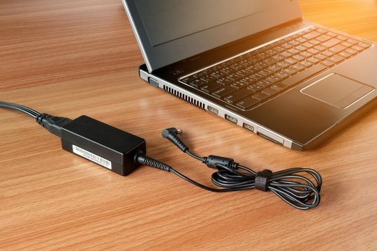
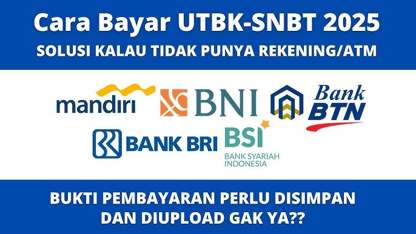
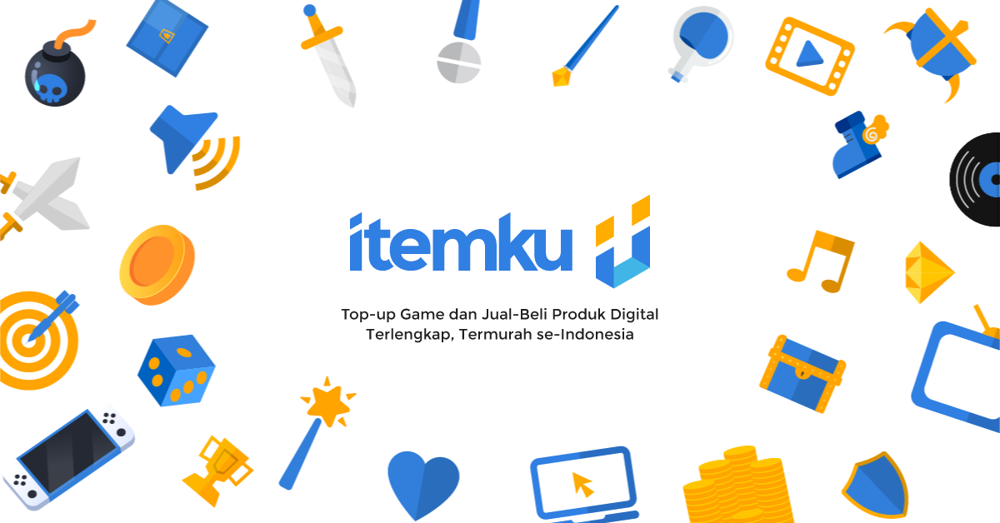
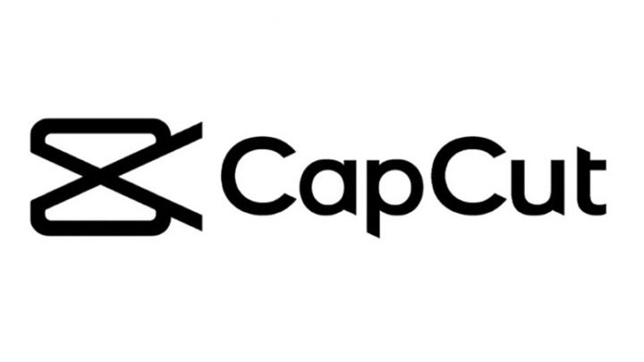
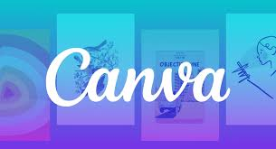

Beranda
Apa itu edukasi? Edukasi adalah proses pembelajaran untuk meningkatkan pengetahuan dan keterampilan. Ini mencakup edukasi yang formal (sekolah, universitas), non-formal (kursus, pelatihan), dan informal (belajar mandiri dari pengalaman). Teknologi telah mempermudah akses edukasi melalui e-learning, aplikasi, dan AI. Edukasi juga mencakup berbagai bidang seperti teknologi, kesehatan, keuangan, dan sains, memungkinkan siapa saja untuk terus belajar di mana saja
Edukasi
-

Cara Merawat Baterai Laptop Agar Awet
Baterai laptop adalah komponen penting yang mempengaruhi mobilitas pengguna. Berikut beberapa tips agar baterai laptop tetap awet:
1. Jangan biarkan baterai terlalu sering habis hingga 0%.
2. Hindari penggunaan laptop sambil terus-menerus mengisi daya.
3. Gunakan mode hemat daya saat tidak memerlukan performa tinggi.
4. Bersihkan ventilasi laptop agar tidak cepat panas.
5. Cabut charger jika daya sudah mencapai 80-90% untuk memperpanjang umur baterai.
Tips Mengamankan Akun Media Sosial dari PeretasanSerangan siber semakin marak, dan menjaga keamanan akun media sosial sangat penting. Berikut langkah-langkahnya:
1. Gunakan kata sandi yang kuat dan berbeda untuk setiap akun.
2. Aktifkan autentikasi dua faktor (2FA).
3. Jangan sembarangan mengklik tautan mencurigakan.
4. Hindari membagikan informasi pribadi secara berlebihan.
5. Periksa aktivitas akun secara berkala untuk mendeteksi hal mencurigakan.
 Dasar-Dasar Penggunaan Excel untuk Pemula
Dasar-Dasar Penggunaan Excel untuk PemulaMicrosoft Excel adalah alat penting untuk mengolah data. Beberapa fitur dasar yang perlu dipahami:
1. SUM(): Menjumlahkan data dalam rentang tertentu.
2. AVERAGE(): Menghitung rata-rata dari sekumpulan data.
3. IF(): Membantu dalam pengambilan keputusan dengan kondisi tertentu.
4. VLOOKUP(): Mencari data berdasarkan nilai referensi.
5. Pivot Table: Mengorganisir dan menganalisis data dengan lebih efektif.
 Cara Menggunakan Google Drive untuk Menyimpan dan Berbagi File
Cara Menggunakan Google Drive untuk Menyimpan dan Berbagi FileGoogle Drive adalah layanan penyimpanan berbasis cloud yang memudahkan pengguna dalam menyimpan dan berbagi file. Berikut cara menggunakannya:
1. Buka drive.google.com dan login menggunakan akun Google.
2. Klik tombol "+ Baru" untuk mengunggah file atau membuat dokumen baru.
3. Untuk berbagi file, klik kanan file tersebut dan pilih "Bagikan".
4. Atur izin berbagi, seperti hanya melihat atau bisa mengedit.
5. Gunakan fitur pencarian untuk menemukan file dengan cepat.
Panduan Dasar Fotografi dengan Kamera SmartphoneMengambil foto berkualitas dengan smartphone tidak selalu membutuhkan kamera mahal. Berikut beberapa tips:
1. Gunakan pencahayaan alami untuk hasil lebih baik.
2. Pegang kamera dengan stabil untuk menghindari gambar buram.
3. Manfaatkan mode HDR untuk keseimbangan warna yang lebih baik.
4. Gunakan aturan sepertiga (rule of thirds) untuk komposisi yang menarik.
5. Edit foto seperlunya untuk meningkatkan kualitas tanpa berlebihan.
Galeri
Resep masakan anak kosTips bertahan hidup jika dompet sekarat
Membuat akun Google anda lebih amanLindungi akun google anda dari peretasan
 Tutorial pembayaran UTBK SNBT 2025Kamu gak tau cara bayar tes utbk sini kita ajarkan
 Cara Membuat Website Sendiri dari Nol Tanpa Coding
Cara Membuat Website Sendiri dari Nol Tanpa Coding
Pusing buat website, tapi pengen punya website sendiri? sini kami ajarkan
 Yuk Berjualan di ItemkuHobi main game tapi pengen menghasilkan uang? sini jual aja skill atau item game kamu disini ya!
 Cara Edit Video di CapCut: Panduan Lengkap untuk PemulaPengen ikut tren jedak jeduk tapi gak tau caranya? sini buat di capcut aja mudah dan cepat
 Cara Menggunakan Canva untuk Membuat DesainBuat file presentasi dengan mudah dan hasilnya bagus, cobain tutorial canva ini
Kontak